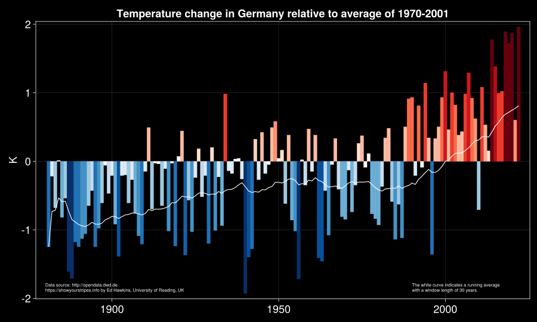

using CSV
using Downloads
using DataFrames
using Statistics
using RollingFunctions
using ColorSchemes
using CairoMakieTutorial: How to generate your own warming stripes using Julia
In this quick tutorial we learn how to create warming stripes similar to those available at showyourstripes.info.
Also, this tutorial serves as an opportunity to become familiar with the Julia programming language and some of its packages.
Our goal is to get as close as possible to the visual appearance of the famous warming stripes.
We will use Julia to access and visualize annual air temperature data for Germany provided by the German Meteorological Service The Deutscher Wetterdienst.
First, some packages for data handling, processing and visualization have to be loaded.
We will download a large CSV file from the web. To this end, we need the packages CSV and Downloads. Further, we store the data in some kind of a database provided by DataFrames.
For the processing of the data we need some statistical quantities from the standard Statistics package.
The package RollingFunctions provides tools to smooth temporal data using windowed averages.
Finally, we create a custom colormap and plot the data with the Makie package.
Color map
To get close to the visual style of the warming stripes charts by Ed Hawking, we define a customized colormap.
The original color palette from Wikipedia provides the required color codes for the blue-white-red colormap.
{kind=link}
wstripesmap = cgrad([
"#08306b", "#08519c", "#2171b5", "#4292c6",
"#6baed6", "#9ecae1", "#c6dbef", "#deebf7",
"#ffffff",
"#fee0d2", "#fcbba1", "#fc9272", "#fb6a4a",
"#ef3b2c", "#cb181d", "#a50f15", "#67000d"],
categorical=true);
wstripesmapData access
We load data from a URL and store everything in a database structure known as a DataFrame.
url = "https://opendata.dwd.de/climate_environment/CDC/regional_averages_DE/annual/air_temperature_mean/regional_averages_tm_year.txt"
http_response = Downloads.download(url)
df = CSV.File(http_response, header=2, delim=";") |> DataFrame;Baseline data and long-term statistics
As a baseline we need the average over sufficiently many years. We choose temperature data from the years 1971 to 2000 and calculate the mean temperature.
Further, we need the standard deviation of the long-term temperature data from 1901 to 2000.
A smoothed data set based on a running mean is generated with an averaging window of 30 years length.
df_baseline = filter(row -> (row.Jahr > 1970) & (row.Jahr < 2001), df)
where = "Deutschland"
col = df_baseline[!, where];
mw = mean(col)
df_longterm = filter(row -> (row.Jahr > 1900) & (row.Jahr < 2001), df)
col = df_longterm[!, where];
sd = std(col)
data = df[!, where] .- mw;
m_data = runmean(data, 30);Visualization
In the following code cell, we use Makie to generate a bar chart with annual temperature data relative to the baseline average of 1971 to 2000. The colormap is scaled to +/- 2.6 times the standard deviation of the long-term data from 1901 to 2000 (see How have these graphics been made? in the FAQ at showyourstripes.info).
We add as white line the smoothed temperature obtained by calculating running averages with a time window of 30 years length.
There is no doubt that the average temperature relative to the baseline data is approaching far more than 1.5 K (or 1.5 °C as it is commonly communicated) for the recent two decades since year 2000.
set_theme!(theme_black())
fig = Figure(resolution = (1200, 720), fontsize=24, fonts = (; regular= "sans"))
ax = Axis(fig[1, 1],
title = "Temperature change in Germany relative to average of 1970-2001",
ylabel = "K",
xautolimitmargin = (0.02,0.02),
yautolimitmargin = (0.02,0.02))
barplot!(ax, df.Jahr, data; width=1, gap=0,
strokewidth = 0.5, strokecolor = data,
color = data,
colorrange = (-2.6 * sd, +2.6 * sd),
colormap = wstripesmap)
lines!(ax, df.Jahr, m_data, color=:white)
text!("Data source: http://opendata.dwd.de\n" *
"https://showyourstripes.info by Ed Hawkins, University of Reading, UK",
textsize=10,
align=(:left, :center),
position = (1880, -1.84))
text!("The white curve indicates a running average\n" *
"with a window length of 30 years.",
textsize = 10,
align=(:left, :center),
position=(1990, -1.84))
fig
The next cell generates the well-known warming stripes for Germany.
set_theme!(theme_minimal())
fig = Figure(resolution = (780, 120))
ax = Axis(fig[1, 1],
backgroundcolor = :transparent,
leftspinevisible = false,
rightspinevisible = false,
bottomspinevisible = false,
topspinevisible = false,
xticklabelsvisible = false,
yticklabelsvisible = false,
xgridcolor = :transparent,
ygridcolor = :transparent,
xminorticksvisible = false,
yminorticksvisible = false,
xticksvisible = false,
yticksvisible = false,
xautolimitmargin = (0.0,0.0),
yautolimitmargin = (0.0,0.0),)
hidedecorations!(ax)
ax.titlevisible=false
hmap = heatmap!(df.Jahr, ones(size(df.Jahr)), data;
colorrange = (-2.6 * sd, +2.6 * sd),
colormap = wstripesmap)
fig